Perceptual-Level Image Understanding
Perceptual-level image understanding focuses on how an image
looks and feels—capturing aesthetics, quality degradations,
structural regularity, and surface texture. These fine-grained perceptual
cues differ fundamentally from semantic recognition, yet remain
underexplored in MLLMs.
To address this,
we introduce UniPercept, a unified framework that defines,
evaluates, and improves perceptual-level visual understanding across the
IAA, IQA, and ISTA domains.
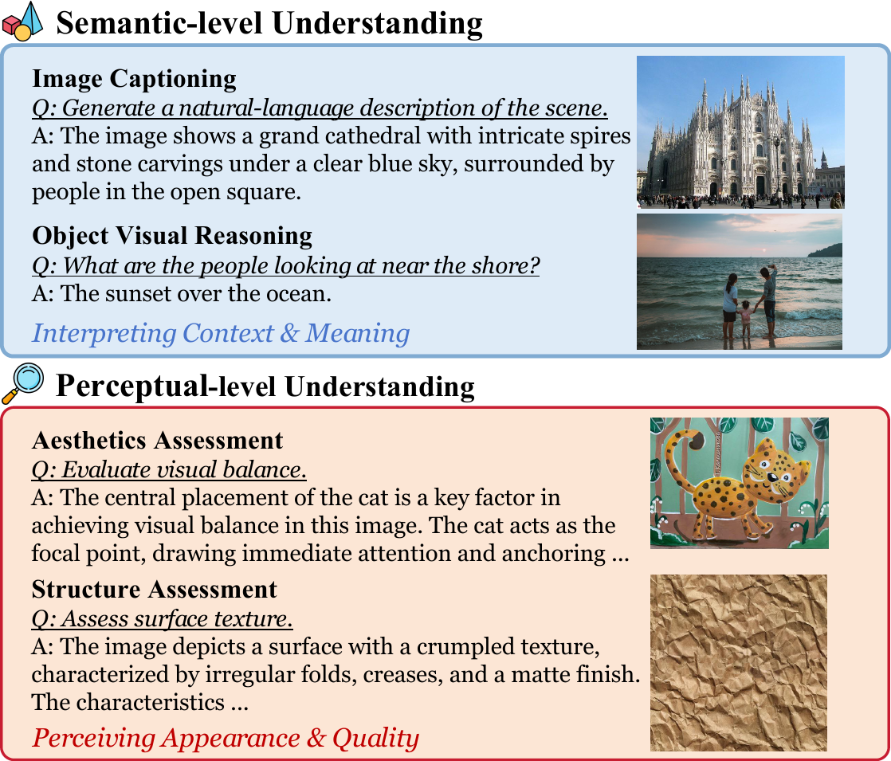
UniPercept-Bench
Interactive Statistics Viewer
Benchmark Examples

Q: What visual element is most prominent due to hierarchical emphasis?
A. Floral design above the circle
B. Text below the circle
C. Cultural attire within the circle
D. Historical architecture background
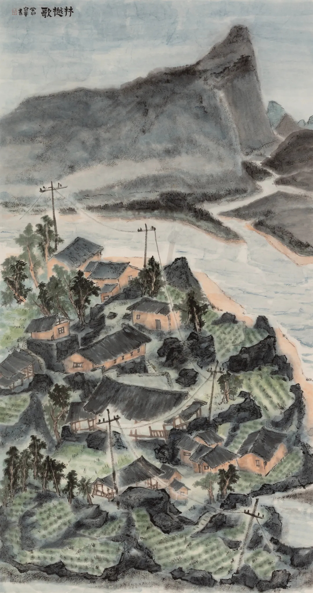
Q: What is your assessment of the Emotion & Viewer Response quality in this picture?
A. Low
B. Medium
C. High
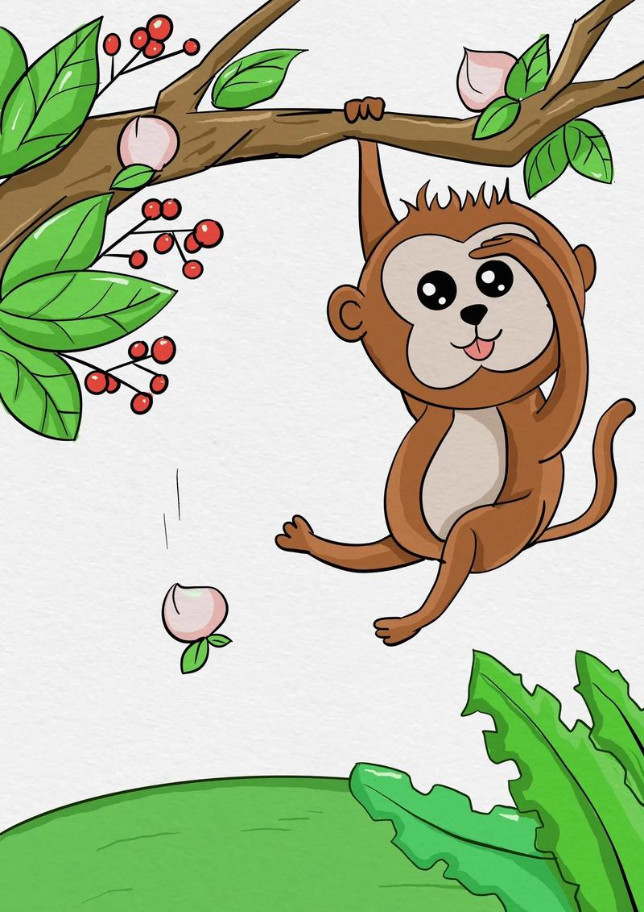
Q: Why do the line dynamics enhance the monkey's playful expression and pose?
A. Lines create movement
and flow
B. Lines emphasize facial details
C. Lines add structural complexity
D. Lines increase color contrast
Q: Why does the artist use layered brushstrokes on the peony petals?
A. Simulate natural petal surfaces
B. Emphasize the golden background
C. Obscure imperfections
D. To reduce the visual prominence
Q: How does the lighting affect texture visibility in the foreground of the image?
A. Enhances stone texture clarity
B. Causes noticeable blurring
C. Creates strong shadow contrasts
D. Reduces texture detail visibility
Q: Which distortion type is evident in the image, affecting color realism?
A. Gaussian YCbCr noise
B. JPEG compression artifacts
C. Saturate strengthen YCrCb distortion
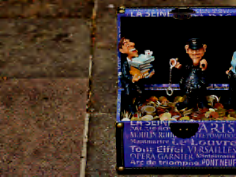
Q: Overall, how would you rate the severity of distortions in this image?
A. None (no visible distortion)
B. Slight (barely noticeable but present)
C. Obvious (clearly visible and significantly impacts perception)
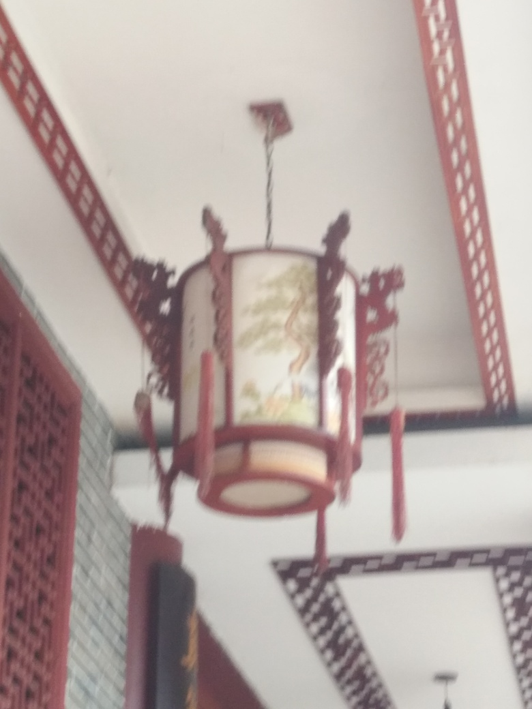
Q: What specific distortion is most noticeable on the lantern’s surface?
A. Overexposure causing loss of detail
B. Blurring obscuring texture details
C. High contrast creating harsh edges

Q: What is the primary 2D contour shape visible in the honeycomb structure?
A. Square
B. Hexagon
C. Circle
D. Pentagon
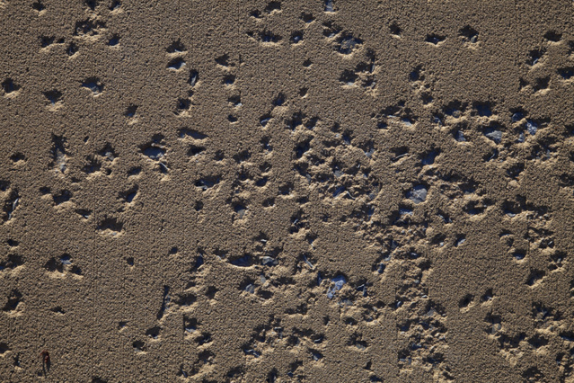
Q: What term best describes the surface texture of the sandy scene?
A. Grooved
B. Pitted
C. Crystalline
D. Braided
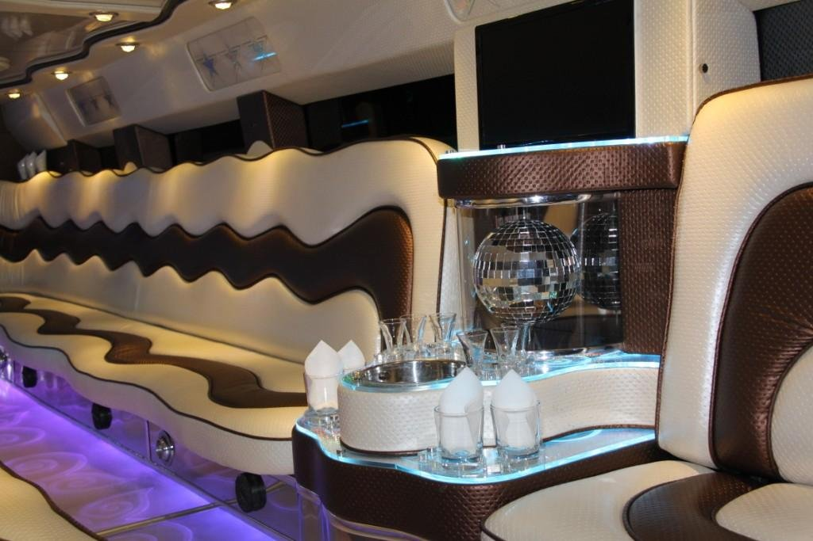
Q: Which stylistic classification best describes the overall visual theme of the limousine interior?
A. Futuristic Minimalism
B. Modern Luxury
C. Art Deco
D. Cyberpunk
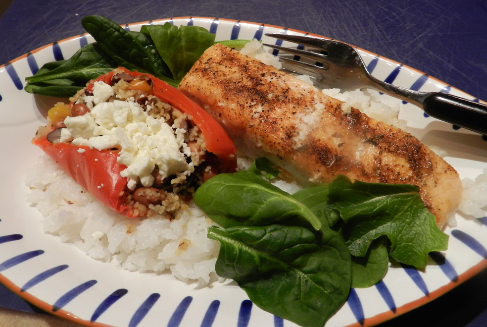
Q: Which component exhibits the highest glossiness in surface properties?
A. Salmon
B. Rice
C. Stuffed Pepper
D. Spinach Leaves
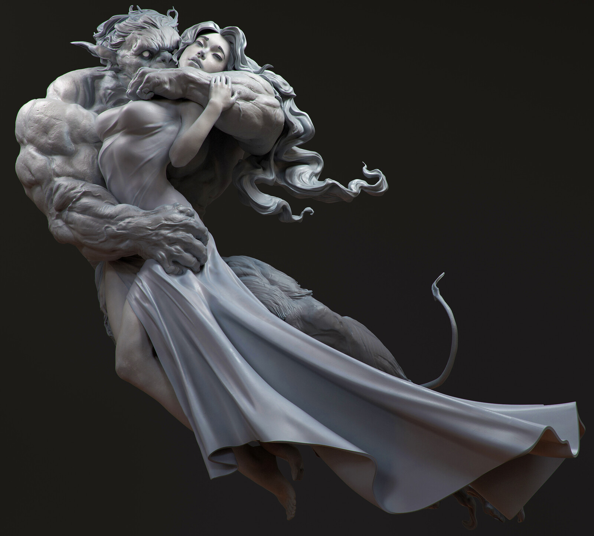
Q: Rate the aesthetics score of this image as a score out of 100.
Aesthetics score : 85.
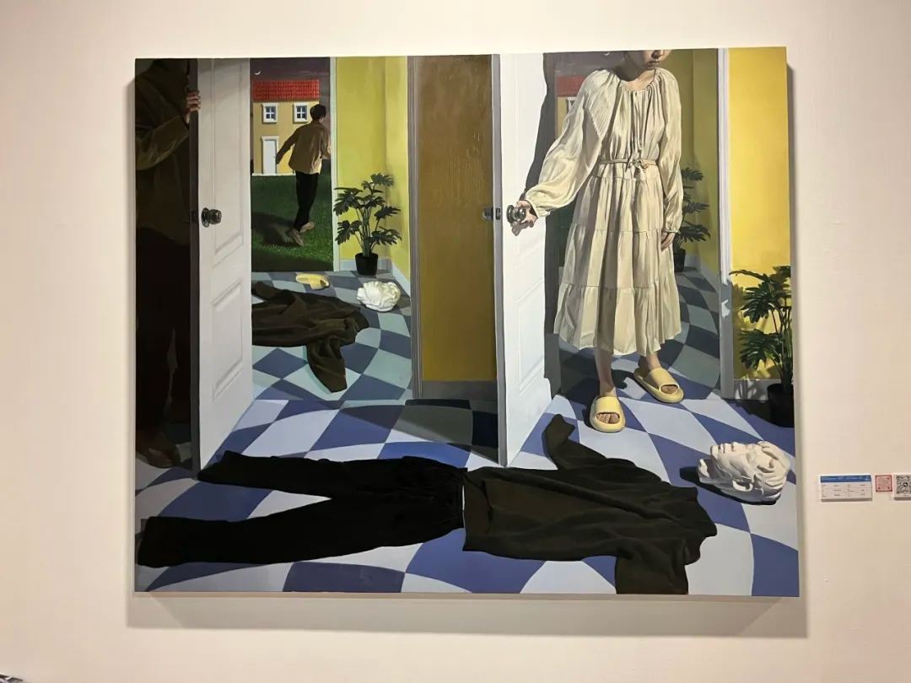
Please provide a quantitative aesthetic assessment for this image on a scale from 0 to 100.
Aesthetics score : 60.
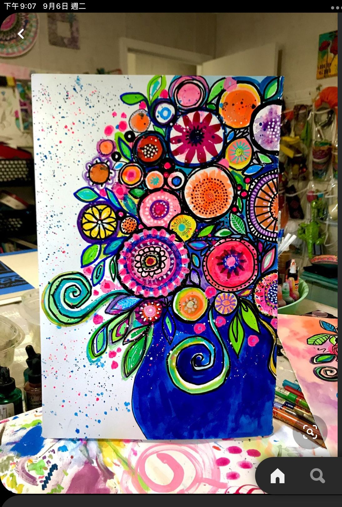
Q: Evaluate the aesthetics of this image with a score out of 100.
Aesthetics score : 57.

Q: Assign an aesthetics score out of 100 to this image.
Aesthetics score : 15.
Provide an overall quality assessment score for this image (0-100).
Quality score : 73.
Assign an overall quality assessment score to this image (0-100).
Quality score : 71.
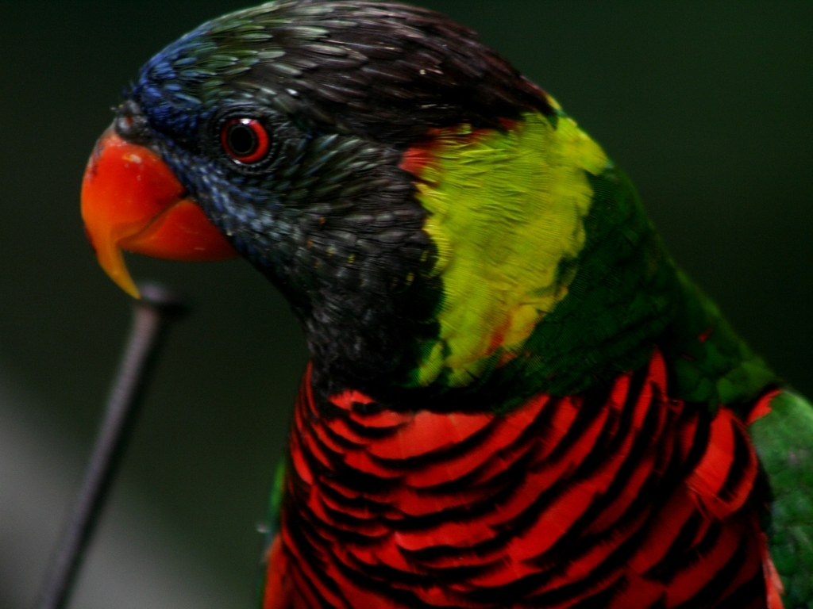
Give an overall quality assessment score for this image on a scale of 0-100.
Quality score : 59.
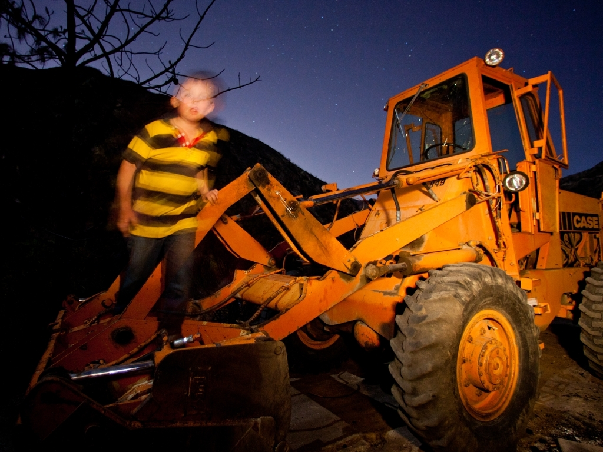
Rate this image with an overall quality assessment score from 0 to 100.
Quality score : 36.
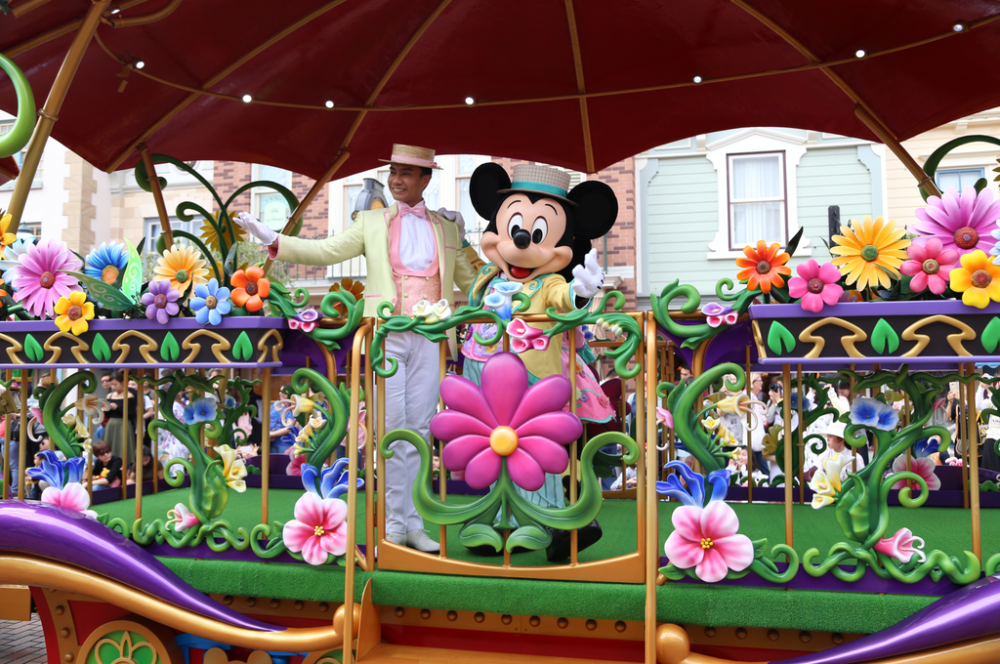
Rate the overall structure & texture richness of this image on a scale of 0 to 100.
Structure & texture richness score : 80.
Assign an overall structure & texture richness score to this image (0-100).
Structure & texture richness score : 68.
Provide an overall structure & texture richness score for this image on a scale of 0-100.
Structure & texture richness score : 37.

Give an overall structure & texture richness score for this image from 0 to 100.
Structure & texture richness score : 11.
Leaderboard
Choose Perceptual Domain
Aesthetics (IAA)
Quality (IQA)
Structure & Texture (ISTA)
Choose Task
Visual Rating (VR)
Visual Question Answering (VQA)
| Models | ArtiMuse-10K | AVA | TAD66K | FLICKR-AES | Avg |
|---|---|---|---|---|---|
| 🥇 UniPercept (Ours) | 0.746/0.738 | 0.589/0.577 | 0.336/0.346 | 0.688/0.681 | 0.590/0.586 |
| 🥈 GPT-4o | 0.333/0.276 | 0.509/0.485 | 0.278/0.282 | 0.605/0.597 | 0.431/0.410 |
| 🥉 GLM-4.5-V-106B | 0.346/0.249 | 0.464/0.420 | 0.289/0.278 | 0.651/0.597 | 0.438/0.386 |
| ArtiMuse | 0.614/0.627 | 0.397/0.385 | 0.230/0.232 | 0.349/0.334 | 0.398/0.395 |
| QwenVL-2.5-72B | 0.233/0.197 | 0.408/0.387 | 0.232/0.235 | 0.626/0.589 | 0.375/0.352 |
| LLaVA-OneVision-1.5-8B | 0.274/0.212 | 0.381/0.378 | 0.213/0.224 | 0.586/0.541 | 0.364/0.339 |
| Q-Insight* | 0.228/0.175 | 0.405/0.376 | 0.212/0.217 | 0.617/0.537 | 0.366/0.326 |
| InternVL3.5-38B | 0.219/0.175 | 0.359/0.357 | 0.201/0.208 | 0.559/0.529 | 0.334/0.317 |
| InternVL3-8B | 0.245/0.211 | 0.372/0.344 | 0.205/0.191 | 0.547/0.476 | 0.342/0.306 |
| QwenVL-2.5-7B | 0.223/0.143 | 0.359/0.324 | 0.208/0.195 | 0.588/0.520 | 0.345/0.296 |
| Q-Align* | 0.551/0.573 | 0.398/0.386 | 0.194/0.197 | 0.137/0.123 | 0.320/0.320 |
| InternVL3-78B | 0.223/0.206 | 0.385/0.344 | 0.221/0.220 | 0.518/0.433 | 0.337/0.301 |
| Llama-4-Scout | 0.204/0.147 | 0.345/0.329 | 0.236/0.210 | 0.548/0.506 | 0.333/0.298 |
| QwenVL-3-32B | 0.227/0.130 | 0.353/0.198 | 0.200/0.095 | 0.572/0.413 | 0.338/0.209 |
| InternVL3.5-8B | 0.135/0.104 | 0.308/0.295 | 0.180/0.182 | 0.519/0.448 | 0.286/0.257 |
| QwenVL-3-8B | 0.156/0.094 | 0.280/0.170 | 0.191/0.121 | 0.507/0.388 | 0.283/0.193 |
| Gemini-2.5-pro | 0.187/0.035 | 0.248/0.100 | 0.143/0.037 | 0.357/0.206 | 0.234/0.095 |
| Claude-Sonnet-4.5-Think | 0.066/0.103 | 0.018/0.019 | 0.026/0.039 | -/- | 0.037/0.054 |
| Claude-Sonnet-4.5 | 0.041/0.027 | 0.003/0.013 | 0.040/0.047 | 0.037/0.049 | 0.030/0.034 |
| Models | KonIQ-10K | SPAQ | KADID | PIPAL | Overall |
|---|---|---|---|---|---|
| 🥇 UniPercept (Ours) | 0.940/0.949 | 0.904/0.895 | 0.872/0.870 | 0.581/0.594 | 0.824/0.827 |
| 🥈 Q-Insight | 0.933/0.916 | 0.907/0.905 | 0.742/0.736 | 0.486/0.474 | 0.767/0.758 |
| 🥉 DeQA | 0.953/0.941 | 0.895/0.896 | 0.694/0.687 | 0.472/0.478 | 0.753/0.750 |
| Q-Align* | 0.941/0.940 | 0.886/0.887 | 0.674/0.684 | 0.403/0.419 | 0.726/0.733 |
| GPT-4o | 0.695/0.744 | 0.874/0.881 | 0.677/0.646 | 0.325/0.349 | 0.643/0.655 |
| QwenVL-3-32B | 0.796/0.838 | 0.690/0.657 | 0.673/0.682 | 0.414/0.402 | 0.643/0.644 |
| Q-Insight* | 0.733/0.750 | 0.800/0.938 | 0.580/0.548 | 0.369/0.368 | 0.621/0.651 |
| QwenVL-3-8B | 0.761/0.822 | 0.612/0.604 | 0.723/0.696 | 0.434/0.427 | 0.633/0.637 |
| InternVL3-78B | 0.635/0.676 | 0.849/0.852 | 0.579/0.553 | 0.415/0.457 | 0.619/0.634 |
| InternVL3.5-38B | 0.578/0.652 | 0.840/0.831 | 0.568/0.537 | 0.448/0.457 | 0.608/0.619 |
| QwenVL-2.5-72B | 0.762/0.820 | -/- | 0.606/0.570 | 0.381/0.407 | 0.583/0.599 |
| InternVL3-8B | 0.574/0.646 | 0.828/0.800 | 0.496/0.475 | 0.435/0.459 | 0.583/0.595 |
| InternVL3.5-8B | 0.663/0.660 | 0.783/0.777 | 0.541/0.478 | 0.351/0.386 | 0.585/0.575 |
| LLaVA-OneVision-1.5-8B | 0.639/0.744 | -/- | 0.505/0.534 | 0.417/0.407 | 0.520/0.562 |
| QwenVL-2.5-7B | 0.708/0.762 | -/- | 0.521/0.517 | 0.350/0.361 | 0.526/0.547 |
| Gemini-2.5-pro | 0.582/0.316 | 0.087/0.212 | 0.436/0.274 | 0.225/-0.019 | 0.333/0.196 |
| GLM-4.5-V-106B | 0.721/0.765 | -/- | -0.142/-0.128 | 0.013/0.020 | 0.138/0.155 |
| Llama-4-Scout | 0.503/0.653 | -/- | -/- | -/- | 0.089/0.170 |
| Claude-Sonnet-4.5 | -/- | 0.036/0.085 | 0.223/0.273 | -0.131/-0.088 | 0.023/0.057 |
| Claude-Sonnet-4.5-Think | -/- | -/- | -/- | -/- | -/- |
| Models | ISTA-10K |
|---|---|
| 🥇 UniPercept (Ours) | 0.778/0.767 |
| 🥈 InternVL3.5-38B | 0.262/0.345 |
| 🥉 QwenVL-2.5-72B | 0.091/0.148 |
| Claude-Sonnet-4.5 | 0.125/0.089 |
| Q-Insight* | 0.060/0.152 |
| GLM-4.5-V-106B | 0.083/0.117 |
| QwenVL-3-32B | 0.084/0.106 |
| GPT-4o | -0.003/0.116 |
| QwenVL-3-8B | 0.033/0.044 |
| QwenVL-2.5-7B | -0.046/0.076 |
| Llama-4-Scout | -0.025/0.047 |
| LLaVA-OneVision-1.5-8B | -0.094/0.027 |
| InternVL3-8B | -0.127/0.046 |
| InternVL3.5-8B | -0.096/-0.025 |
| Gemini-2.5-pro | -0.230/-0.118 |
| Claude-Sonnet-4.5-Think | -/- |
| InternVL3-78B | -/- |
| ArtiMuse | -/- |
| DeQA | -/- |
| Q-Align* | -/- |
| Q-Insight | -/- |
| Models | ISTA Categories | QA Templates | Overall | ||||||||
|---|---|---|---|---|---|---|---|---|---|---|---|
| Scene. | Phys. | Mat. | Geo. | Sem. | How | What | Which | Why | Yes-No | ||
| 🥇 UniPercept (Ours) | 89.74% | 85.71% | 82.44% | 93.94% | 78.51% | 82.69% | 89.24% | 78.54% | 83.12% | 85.51% | 84.23% |
| 🥈 LLaVA-OneVision-1.5-8B | 78.63% | 85.16% | 82.44% | 72.73% | 80.17% | 83.33% | 81.40% | 75.30% | 84.42% | 88.41% | 81.13% |
| 🥉 InternVL3-78B | 79.06% | 85.16% | 77.42% | 69.70% | 78.51% | 81.41% | 79.65% | 73.68% | 84.42% | 81.16% | 79.28% |
| Gemini-2.5-pro | 76.50% | 82.42% | 77.06% | 66.67% | 77.69% | 78.21% | 78.20% | 75.71% | 82.47% | 71.01% | 77.73% |
| Claude-Sonnet-4.5 | 76.92% | 78.57% | 74.91% | 90.91% | 77.69% | 76.92% | 77.03% | 74.49% | 81.82% | 79.71% | 77.32% |
| GLM-4.5-V-106BA12B | 81.20% | 79.67% | 74.55% | 72.73% | 75.21% | 80.77% | 76.74% | 73.68% | 79.87% | 78.26% | 77.22% |
| Claude-Sonnet-4.5-Think | 77.35% | 78.02% | 73.12% | 87.88% | 75.21% | 76.28% | 74.71% | 74.09% | 81.82% | 76.81% | 76.08% |
| GPT-4o | 75.64% | 79.12% | 73.48% | 33.33% | 77.27% | 71.79% | 78.78% | 69.23% | 77.92% | 72.46% | 74.64% |
| InternVL3-8B | 75.64% | 79.12% | 73.48% | 33.33% | 77.27% | 71.79% | 78.78% | 69.23% | 77.92% | 72.46% | 74.64% |
| QwenVL-2.5-Instruct-7B | 74.79% | 72.53% | 74.91% | 51.52% | 73.55% | 73.72% | 77.33% | 66.80% | 74.03% | 73.91% | 73.30% |
| Llama-4-Scout | 73.50% | 75.27% | 71.68% | 72.73% | 67.77% | 75.64% | 69.77% | 69.64% | 77.27% | 69.57% | 71.86% |
| InternVL3.5-38B | 50.00% | 55.49% | 61.29% | 30.30% | 35.95% | 50.64% | 59.30% | 42.91% | 37.01% | 57.97% | 50.10% |
| InternVL3.5-8B | 54.27% | 50.55% | 58.42% | 39.39% | 36.36% | 46.79% | 56.69% | 48.58% | 29.87% | 71.01% | 49.79% |
| QwenVL-3-Instruct-8B | 27.78% | 32.42% | 25.45% | 39.39% | 24.79% | 14.74% | 23.26% | 28.34% | 25.32% | 81.16% | 27.63% |
| QwenVL-3-Instruct-32B | 26.50% | 24.73% | 19.00% | 15.15% | 18.60% | 11.54% | 18.31% | 22.67% | 17.53% | 66.67% | 21.65% |
| QwenVL-2.5-Instruct-72B | 14.10% | 29.12% | 19.71% | 12.12% | 18.60% | 20.51% | 12.21% | 14.57% | 31.17% | 46.38% | 19.59% |
| Models | IAA Categories | QA Templates | Overall | ||||||||||||
|---|---|---|---|---|---|---|---|---|---|---|---|---|---|---|---|
| Comp. | VisStr. | Tech. | Creat. | Theme. | Emo. | Gest. | CompEv. | Lv.Pred | How | What | Which | Why | Yes-No | ||
| 🥇 UniPercept (Ours) | 80.00% | 77.54% | 69.70% | 80.56% | 79.26% | 80.95% | 67.53% | 69.77% | 63.71% | 92.20% | 81.88% | 75.32% | 86.67% | 84.62% | 76.55% |
| 🥈 InternVL3-78B | 71.79% | 73.26% | 61.21% | 73.15% | 74.81% | 74.29% | 53.25% | 37.21% | 45.14% | 85.82% | 81.16% | 72.15% | 86.00% | 75.64% | 68.28% |
| 🥉 Gemini-2.5-pro | 71.79% | 68.45% | 61.59% | 76.85% | 67.41% | 63.81% | 61.84% | 37.21% | 45.98% | 78.72% | 73.91% | 67.72% | 84.67% | 84.62% | 66.44% |
| ArtiMuse | 67.69% | 68.45% | 64.85% | 74.07% | 71.85% | 64.76% | 61.04% | 32.56% | 39.14% | 88.65% | 76.81% | 72.78% | 85.33% | 79.49% | 66.31% |
| Claude-Sonnet-4.5 | 70.26% | 70.05% | 62.20% | 71.30% | 64.44% | 67.62% | 50.00% | 46.51% | 46.84% | 77.30% | 76.09% | 65.19% | 86.00% | 69.23% | 65.45% |
| Claude-4.5-Think | 71.28% | 69.52% | 61.21% | 68.52% | 62.22% | 66.67% | 53.25% | 41.86% | 44.57% | 75.89% | 77.54% | 67.09% | 86.00% | 66.67% | 64.73% |
| GLM-4.5-V-106B | 67.18% | 65.78% | 60.98% | 75.00% | 64.44% | 68.57% | 51.32% | 46.51% | 45.40% | 71.63% | 78.26% | 65.82% | 84.67% | 70.51% | 64.46% |
| QwenVL-2.5-7B | 67.18% | 70.74% | 56.36% | 66.67% | 68.89% | 63.81% | 48.05% | 37.21% | 38.86% | 76.76% | 75.36% | 67.09% | 87.33% | 71.79% | 63.19% |
| LLaVA-OneVision-1.5-8B | 67.18% | 68.62% | 61.21% | 62.96% | 67.41% | 62.86% | 53.25% | 20.93% | 34.86% | 85.21% | 79.71% | 65.82% | 83.33% | 69.23% | 62.60% |
| InternVL3-8B | 65.64% | 67.55% | 59.39% | 67.59% | 69.63% | 62.86% | 50.65% | 25.58% | 36.00% | 81.69% | 73.91% | 67.72% | 86.00% | 71.79% | 62.60% |
| Llama-4-Scout | 62.56% | 68.45% | 59.76% | 61.11% | 57.78% | 70.48% | 48.68% | 32.56% | 43.97% | 70.92% | 69.57% | 61.39% | 77.33% | 70.51% | 60.91% |
| GPT-4o | 64.62% | 59.57% | 57.58% | 60.19% | 65.19% | 67.62% | 51.95% | 30.23% | 38.86% | 78.17% | 72.46% | 62.66% | 72.67% | 70.51% | 60.04% |
| InternVL3.5-38B | 37.44% | 40.11% | 27.88% | 39.81% | 34.81% | 38.10% | 45.45% | 6.98% | 34.00% | 47.52% | 26.09% | 28.48% | 37.33% | 50.00% | 35.67% |
| InternVL3-5-8B | 32.31% | 29.41% | 30.30% | 26.85% | 28.89% | 26.67% | 23.38% | 9.30% | 17.14% | 41.13% | 26.81% | 19.62% | 36.00% | 58.97% | 28.18% |
| QwenVL-2.5-72B | 22.05% | 24.60% | 25.45% | 29.63% | 30.37% | 18.10% | 19.48% | 6.98% | 14.00% | 19.86% | 17.39% | 24.05% | 41.33% | 51.28% | 23.74% |
| Models | IQA Categories | QA Templates | Overall | |||||||
|---|---|---|---|---|---|---|---|---|---|---|
| Loc. | Sev. | Type. | Lv.Pred | How | What | Which | Why | Yes-No | ||
| 🥇 UniPercept (Ours) | 77.43% | 79.60% | 90.98% | 79.60% | 87.03% | 80.86% | 75.60% | 83.42% | 79.31% | 81.07% |
| 🥈 LLaVA-OneVision-1.5-Instruct-8B | 76.51% | 59.87% | 77.46% | 59.87% | 91.35% | 70.37% | 61.31% | 82.35% | 75.86% | 72.15% |
| 🥉 InternVL3-78B | 75.41% | 51.84% | 81.56% | 51.84% | 93.51% | 66.67% | 63.10% | 88.24% | 66.67% | 70.31% |
| GPT-4o | 71.74% | 53.18% | 70.49% | 53.18% | 83.78% | 59.26% | 61.31% | 80.21% | 67.82% | 66.36% |
| Claude-Sonnet-4.5-Think | 71.19% | 55.52% | 66.80% | 55.52% | 89.19% | 50.00% | 51.79% | 82.89% | 72.41% | 65.90% |
| QwenVL-2.5-Instruct-7B | 74.13% | 48.83% | 66.39% | 48.83% | 88.65% | 60.49% | 53.57% | 78.61% | 77.01% | 65.44% |
| Claude-Sonnet-4.5 | 71.19% | 51.51% | 66.80% | 51.51% | 90.81% | 50.00% | 50.60% | 82.89% | 71.26% | 64.80% |
| InternVL3-8B | 71.56% | 52.84% | 59.43% | 52.84% | 87.03% | 59.88% | 48.81% | 71.12% | 71.26% | 63.69% |
| Llama-4-Scout | 60.18% | 58.19% | 52.05% | 58.19% | 82.16% | 37.04% | 38.69% | 66.31% | 62.07% | 57.81% |
| GLM-4.5-V-106BA12B | 70.09% | 35.79% | 54.51% | 35.79% | 88.11% | 48.77% | 44.05% | 74.33% | 68.97% | 57.17% |
| InternVL3.5-38B | 38.90% | 49.83% | 45.08% | 49.83% | 46.49% | 41.36% | 31.55% | 33.16% | 62.07% | 43.29% |
| Gemini-2.5-pro | 32.84% | 52.84% | 40.98% | 52.84% | 40.54% | 32.72% | 29.17% | 41.18% | 28.74% | 40.17% |
| InternVL3.5-8B | 38.17% | 44.82% | 38.11% | 44.82% | 35.14% | 41.98% | 30.36% | 36.36% | 56.32% | 39.98% |
| QwenVL-3-Instruct-8B | 34.68% | 55.18% | 16.39% | 55.18% | 20.54% | 18.52% | 27.38% | 25.67% | 77.01% | 36.21% |
| QwenVL-3-Instruct-32B | 29.54% | 14.38% | 16.80% | 14.38% | 11.89% | 18.52% | 25.60% | 22.46% | 74.71% | 22.52% |
| QwenVL-2.5-Instruct-72B | 31.01% | 4.68% | 16.39% | 4.68% | 35.14% | 14.81% | 11.31% | 22.99% | 66.67% | 20.50% |
VQA – ISTA TABLE
UniPercept As Reward
Quantitative Results
| Models | Preference Score | Image Quality | Image Aesthetics | UniPercept Score | ||||
|---|---|---|---|---|---|---|---|---|
| PickScore | HPSv3 | DeQA | LAION-Aes | ArtiMuse | IAA | IQA | ISTA | |
| Baseline (FLUX.1-dev) | 22.46 | 10.71 | 4.32 | 5.77 | 59.02 | 65.18 | 73.59 | 46.64 |
| w/ UniPercept IAA Reward | 22.47 | 10.09 | 4.09 | 6.19 | 67.02 | 76.20 | 76.39 | 54.83 |
| w/ UniPercept IQA Reward | 22.63 | 11.21 | 4.37 | 6.02 | 63.64 | 72.16 | 76.87 | 52.34 |
| w/ UniPercept ISTA Reward | 22.72 | 11.09 | 4.37 | 6.16 | 63.75 | 72.23 | 76.17 | 59.61 |
| w/ UniPercept All Rewards | 22.67 | 10.93 | 4.33 | 6.19 | 65.52 | 74.24 | 77.04 | 59.08 |
Qualitative Results
Prompt
Baseline
(FLUX.1-dev)
(FLUX.1-dev)
w / UniPercept
IAA Reward
IAA Reward
w / UniPercept
IQA Reward
IQA Reward
w / UniPercept
ISTA Reward
ISTA Reward
w / UniPercept
All Rewards
All Rewards
A modern office space featuring a sleek desk with a computer set up, including a monitor, keyboard, and mouse. Beside the computer, there's a printer with a stack of paper next to it. An ergonomic office chair is positioned in front of the desk, ready for someone to sit down and start working.
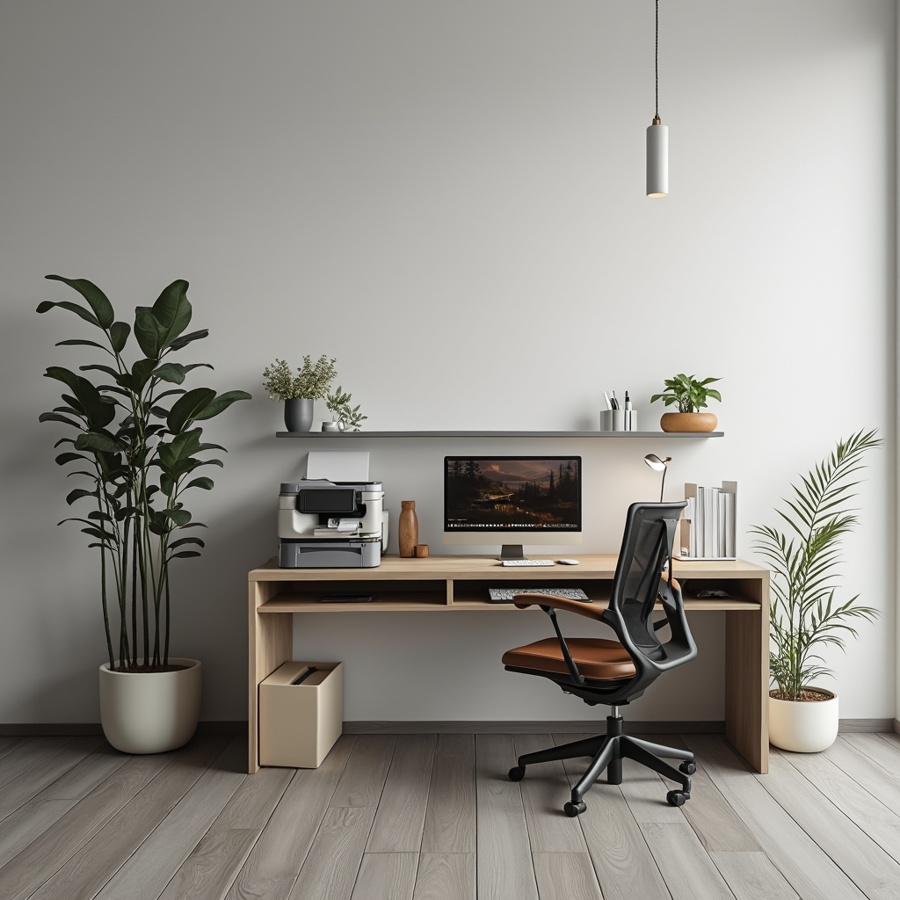
A young child with brown hair, focused intently, sits at a wooden table scattered with colorful crayons and paper. In their small hand is a bright red pencil, with which they are diligently drawing a vibrant blue flower that's taking shape on the white sheet before them. Sunlight filters through a nearby window, casting a warm glow on the child's artwork.
A striking black bird with glossy feathers sits atop the vibrant orange petals of a Bird of Paradise flower. The unique flower is positioned in the midst of an arid desert landscape, with various cacti and sparse vegetation dotting the sandy ground. In the background, the sun casts a warm glow on the distant rolling dunes.

A vibrant yellow 2017 Porsche 911 is captured in motion, navigating a winding mountain road with its sleek body hugging the curve. The sports car's headlights are piercing through the overcast weather, illuminating the path ahead. In the background, a lush green valley stretches out beneath a sky filled with grey clouds, hinting at the vast expanse beyond the road's edge.
UniPercept As Metrics
Model
benchmark
Unipercept-Metrics
Building Unified Profiles for Every Image
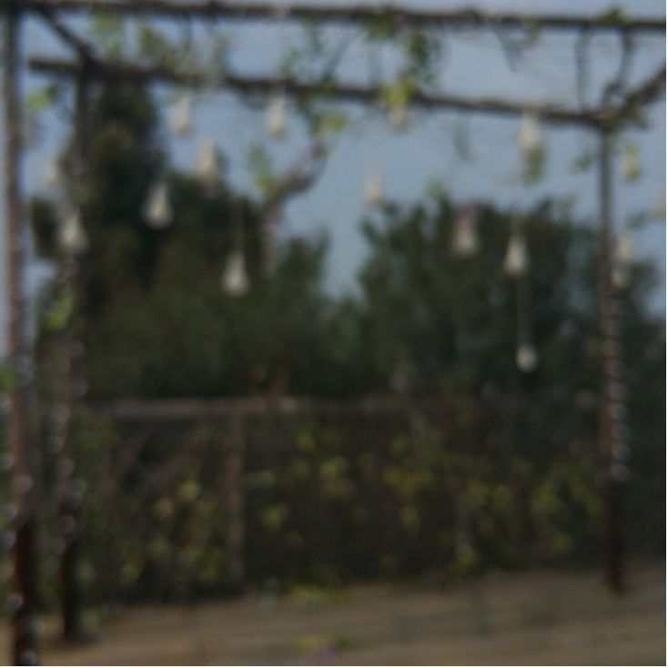

Contact & Cite
For any questions or collaborations, feel free to reach out at caoshuo@pjlab.org.cn.
If you find our work helpful, please consider citing the following:
@misc{cao2025artimusefinegrainedimageaesthetics,
title={ArtiMuse: Fine-Grained Image Aesthetics Assessment with Joint Scoring and Expert-Level Understanding},
author={Shuo Cao and Nan Ma and Jiayang Li and Xiaohui Li and Lihao Shao and Kaiwen Zhu and Yu Zhou and Yuandong Pu and Jiarui Wu and Jiaquan Wang and Bo Qu and Wenhai Wang and Yu Qiao and Dajuin Yao and Yihao Liu},
year={2025},
eprint={2507.14533},
archivePrefix={arXiv},
primaryClass={cs.CV},
url={https://arxiv.org/abs/2507.14533}
}